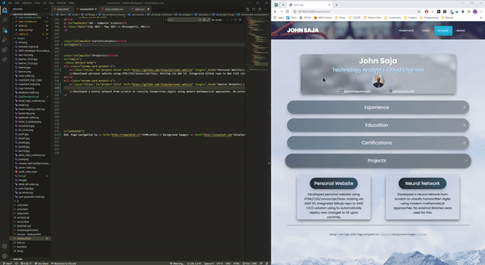
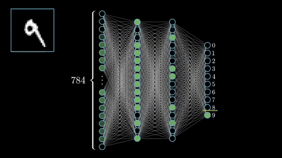

John Saja
Technology Analyst / Cloud Engineer


sajax003@umn.edu
Minneapolis, MN
Technology Solutions Analyst
@
Aug 2017 - Present >> Minneapolis, MN
Led Proof of Concept to detect defects in manufacturing processes
Collaborated with senior management to develop a proof of concept using computer vision in Python to detect defects in manufacturing processes. Built a prototype that was presented to the Account Rep. and referred to the head of R&D.
Led team transition to a Privileged Access Management Platform
Single-handedly led an effort to upgrade business processes by converting current account policies to a Privileged Access Management Platform, saving 100+ billable hours yearly across the 15 person team.
Developed software packages for dept. of 450 users
Solely developed, architected, and deployed software packages for the Legal dept. of 450+ users. This successfully upgraded a critical application which increased productivity of all document handling across the dept.
UMN Campus recruiter / Trained & mentored hires in technical skills
Engaged with 200+ students. Gave advice on transitioning from college to career. Trained and mentored 5 team members in technical skills such as SQL, networking concepts, and application lifecycle development.
Built a REST API Integration for a Vendor application.
Worked with several internal and vendor project managers for an NDA Creation Workflow. Built a REST API Integration which enabled the Legal dept. to create contracts and quickly search for company info.
Designed creative solutions for business process improvements
Designed a unique solution using ODBC and Powershell to sync application user data with intranet data. This automated and completely eliminated a frequent business request.
Deployed new servers into application architecture
Within the first year, coordinated with network engineers to securely implement a server in an application. This eliminated a need for data storage, resulting in a substantial cost savings to the business.
Consulted clients on AWS service stack for application migrations
Converted application component map into an equivalent AWS Service Stack, and calculated a cost estimate for the Product owner. This provided cost-savings for the business, who are currently pursuing a full migration.
Managed and maintained user facing SQL production data on 4 applications
Responsible for managing all user-facing data via SQL for 4 high priority applications. Constantly updated data, creating a seamless end-user experience. Diagnosed and resolved all network issues between SQL and application servers.
Provided rapid production support for global Legal clients
Resolved 1,296 support requests from global users. Maintained a high level of professionalism and transparency over requests of all priorities, resulting in high end-user satisfaction. Became the primary point of contact for all legal applications.
IT Lead
@
Jun 2015 - Feb 2017 >> Minneapolis, MN
Managed & Trained an IT team of 4 for 2016 UMN athletics season
Deployed and serviced all Payment devices in TCF Bank stadium. Trained and mentored a team on coordination with stadium managers to triage and resolve issues during events.
University of Minnesota Twin Cities
BA - Computer Science
Sep 2013 - May 2017 >> Minneapolis, MN

Personal Website

Developed personal website using HTML/CSS/Javascript/Sass. Hosting via AWS S3. Integrated Github repository to AWS CICD solution to automatically deploy new changes to S3.
Neural Network

Developed a neural network from scratch to classify handwritten digits using modern mathematical approaches. No external libraries were used for this.